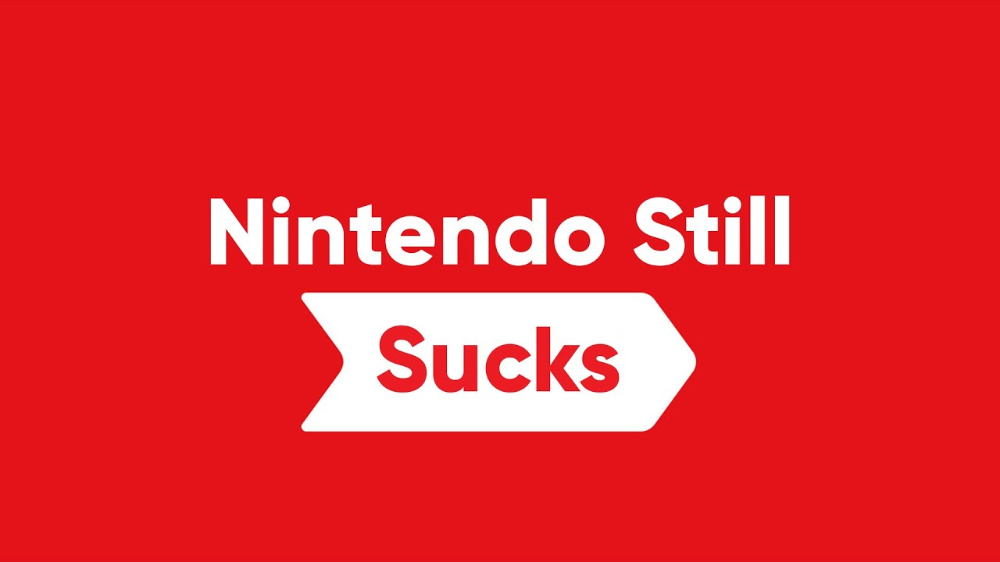

Welome to the website where I will write my thoughts on the 7th and 8th gen of consoles
Why does my say matter at all?
It does not really matter. I just happen to be a huge nerd and it is something I like talking about. Currently I mostly use my PC for videogames but also game on consoles here and there. PCs offer a very different gaming experience compared to consoles though. Gaming on consoles is just overall more laidback, can be used more socially with your friends and is pretty much always more affordable.
Nintendo
My first videogame console ever was a Nintendo Wii. My parents bought it for me and my brothers when iwas still in elementary school. Many many great memories were made playing on the Wii. I played on the Wii with my friends, brothers and other family members. We played games such as Super Mario Bros Wii, Mario kart Wii and Wii sports. The system truly had something to offer for everyone.
Later on we also had a Nintendo DSi, Nintendo 3DS, Nintendo Wii U and me and my brothers all got our personal Nintendo Switches. Personally i have spent a lot of hours gaming on the Nintendo Switch. One of my brothers got a Nintendo Switch as his birthday present the same year it was released. Everyone played the hell out of that thing. With the launch titles including Mario Kart 8 deluxe, Super Mario Odyssey and Legend of Zelda: Breath of The Wild, there was no way the console was gonna fail the same way like the Wii U did commercially.
I love the Nintendo Switch, or at least i used to. I started having very controversial feelings about it recently. I really did not know where all of it came from until i tried out the Nintendo 3DS that my little brother had. It still to this day has so much charm and personality that i feel like no other console has. The modding community for it is still large and active and you can nowadays do everything from installing custom themes on the home menu to pirating games if that's what your heart desires.

(Thumbnail from Youtuber Stryxo's video, where he talks about Nintendo's greed and problems such as joycon drift. Nintendo games are fantastic, the management isn't)
It really feels like Nintendo has not really given the Switch as much love as their other consoles. Apart from the launch titles that Nintendo developed, I cannot really think of other Nintendo developed games other than remasters and rereleases of older games. It really feels like greed took over Nintendo really badly. There was no reason to make online play monetized. Even though arguably 20 euros a year is not a bad price at all for the service, it was completely free for the first year of the Switch's lifetime. What makes this even more ridiculous is the fact that the online service still has the same issues of lagginess/unresponsiveness, that it had before going monetized.
My main problem as a student with the Switch, is that Nintendo almost never puts their games on sale. It is way too expensive for me to pay 60 euros for each game. Last time i paid 60 euros for a game was almost 3 years ago. Many people have the problem of feeling like there have not really been any new games for the Switch in a long while like i mentioned before with the launch titles from 2017(!) pretty much being still the best games available for the system.
I really hope we will get to see the old Nintendo come back with the next Nintendo console whatever it might come out to be. I miss the Nintendo and their creativity from the 3DS and Wii U era. It is just like many people say: Nintendo is at their best when they are in a bad spot financially. I feel like Nintendo is playing it way too safe with the Nintendo Switch and not really trying out new things.